Another bus trip later we arrived on the island of Chiloe. This place is regarded as a backward kind of place by the cosmopolitan Santiagans, but it has retained much of its traditional lifestyle and customs. Fisherman’s houses are still built on stilts on the waterline, so they can tie up their boats at the back door. These wooden terraces stilts in the water are called palifitos or something. This place also had lots of brightly coloured houses. We stayed the night in a bright yellow residencial (B+B) which we thought was cool. There was a little incident with a nutter who wanted to eat with us, but that didn't spoil our enjoyment of the excellent and very cheap seafood the area is famous for.
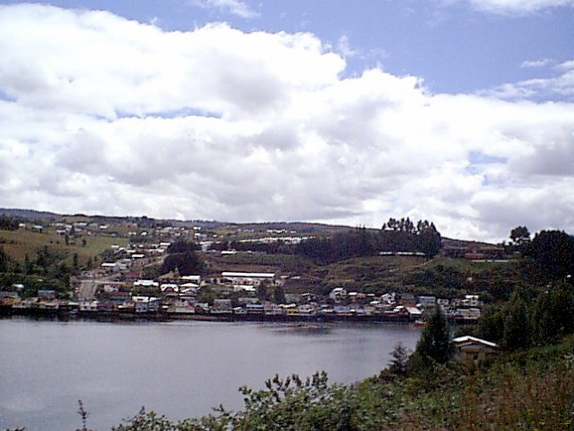
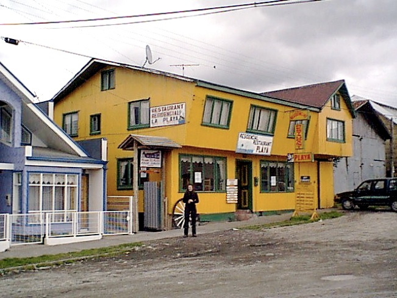
At the port of Quellon, we boarded the Navimag ferry for a three day, two night "cruise" through the fjords of Chile's south central coastline. We were going to take the longer ferry all the way down to Puerto Natales but it was full. As it turned out this was a better plan, as three nights sleeping on the floor (once actually out on deck!) might have been a bit much. This boat turned out to be the local ferry service, and was much less touristy than the longer boat. As a result we got to stop off in the most bizarre isolated little places and see the locals up to their daily doings. We often stopped at places with no pier, so the ferry would either pitch up onto the beech and drop the door onto the sand, or just drop anchor and let them come to the open door (still don't understand why we didn't sink!?) in little yellow fishing boats while we were still in deep water. We got off a few times for a stroll on the beech or through a little village. It was pretty clear that the locals relied on this ferry as their primary (if not only) method of communication and transport to the rest of the country. There aren't many roads in this part of the world! Too many fjords! Each time we stopped there would be hours of waiting about as people, trucks, shellfish and other goods were loaded and unloaded. We slipped into some sort of weird ferry time, where whenever the crew told you we would arrive or depart some place, you had to add on at least 8 hours. Amongst a lot of miserable weather and clouds, we saw penguins and porpoises, millions of islands, fjords and waterfalls, and met a couple of dodgy german bikers, a stereotypically nice dutch couple, and mad bloke who had been traveling for 40 years, an Irishman who had left his job at the bank to mess about in south america for a bit, and a group of students from Santiago who were going to teach the locals in isolated communities how to maintain their soil using composting instead of the slash and burn destroy all the forest method. These kids were a good laugh and we had a few lagers with them to keep out the cold. Their english was markedly better than our (or rather Suzie's) spanish. The pictures of the little yellow boats are those guys being whisked off to the little village they were staying at. Suzie and I wondered if they would ever make it back, as it looked like the most isolated place in the world. Really a very long way from civilisation indeed! They might still be there as I haven’t has a reply from Maurice yet!
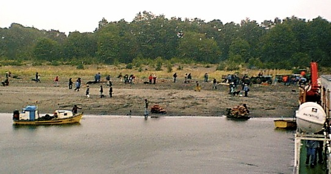
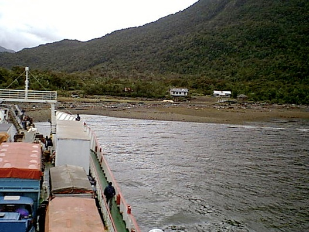
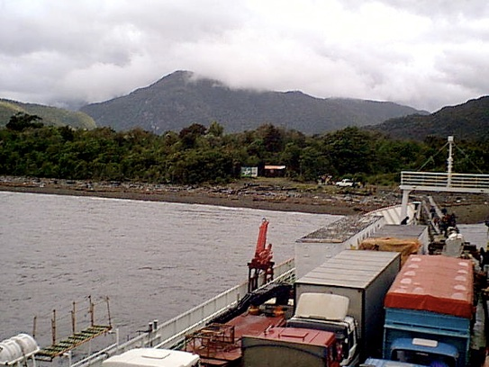
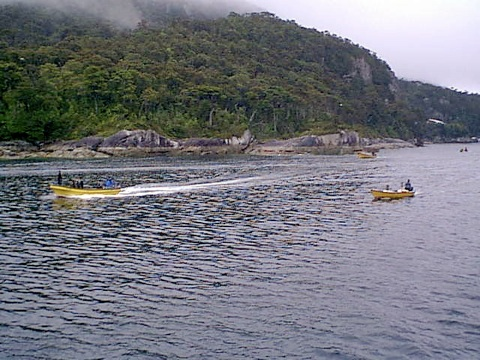
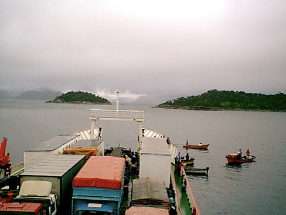
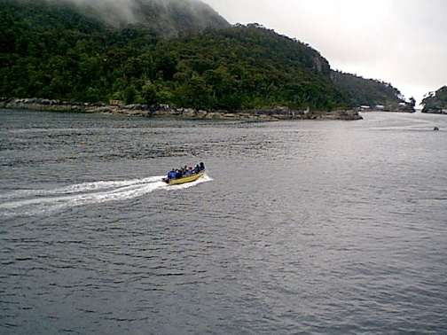
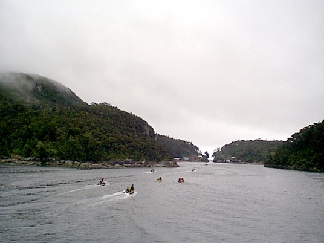
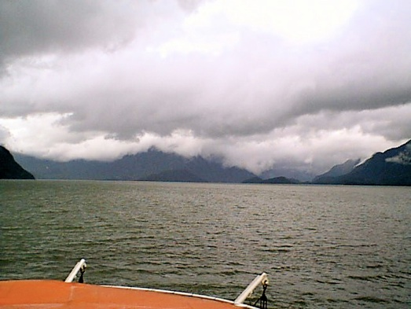
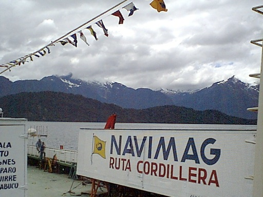
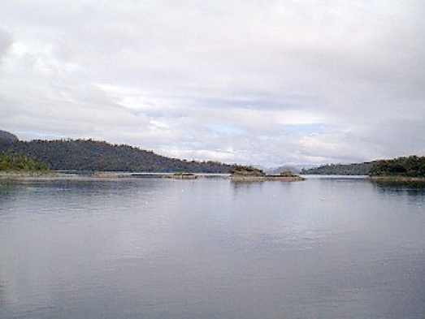
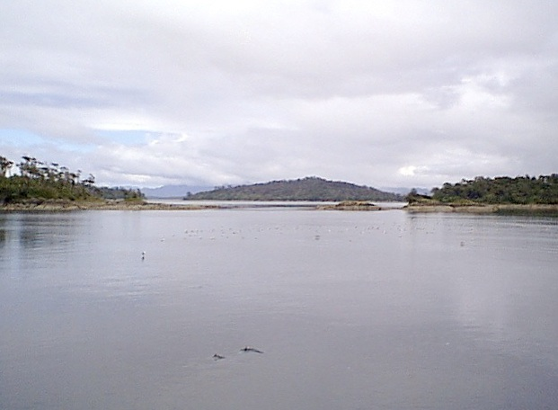
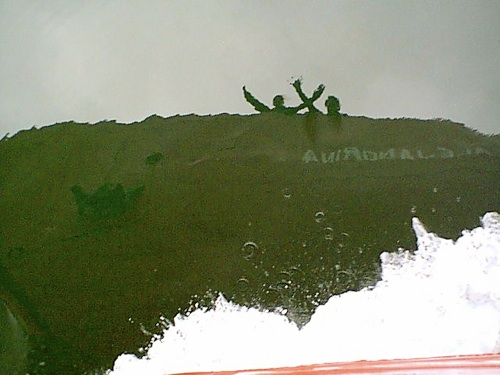
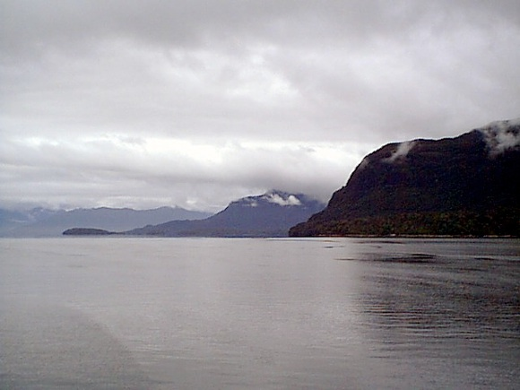
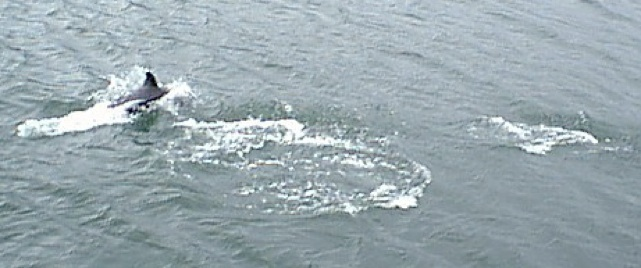